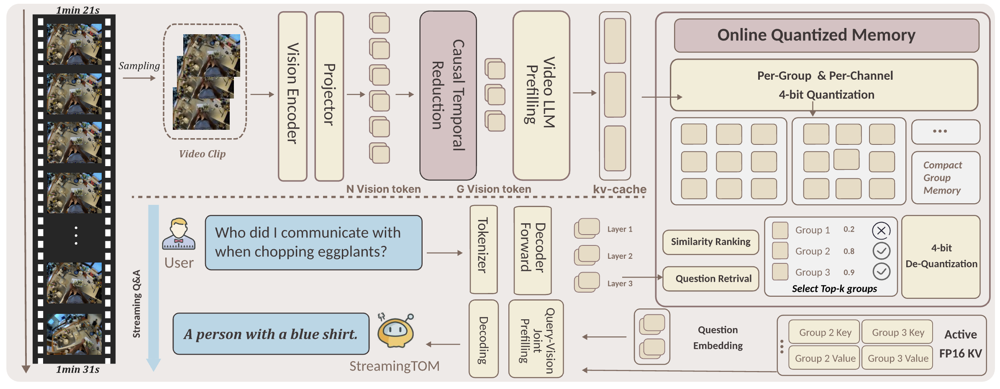
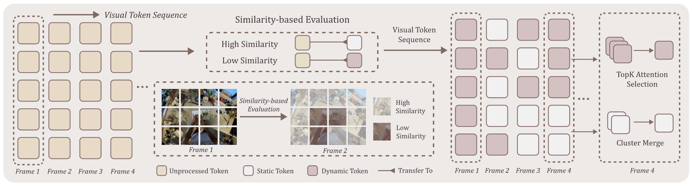

StreamingTOM Architecture: The framework consists of two coordinated pipelines. The vision pipeline encodes each frame and applies Causal Temporal Reduction to condense redundant tokens into compact groups, which are written to an online memory for reuse. The query pipeline processes questions and drives the decoder to interact with the memory through Online Quantized Memory, which stores groups at 4-bit precision, retrieves at most k groups on demand, and dequantizes them for efficient generation.
Causal Temporal Reduction (CTR) Pipeline

CTR compression pipeline: The algorithm processes visual tokens from consecutive frames using a 2-frame window (current and previous), producing a binary classification (static, dynamic) through similarity comparison. The adaptive budget allocation dynamically distributes compression resources based on content, followed by dual-path processing: dpc clustering for static tokens and attention-based selection for dynamic tokens.